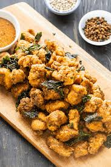

Popcorn Chicken

Popcorn chicken: because sometimes, you just want your meat bite-sized, crispy, and impossible to stop eating after the 12th piece. It's like regular chicken, but with a serious snack complex. Crunchy, golden, and dangerously addictive, it's the unofficial food of people who "accidentally" finish the whole batch.
Ingredients
- 2 chicken breasts (cut into tiny, popcorn-worthy chunks)
- 1 cup buttermilk (or milk + a splash of vinegar, if you're winging it)
- 1 cup all-purpose flour
- 1/2 cup cornstarch (for that extra crunch)
- 1 teaspoon paprika
- 1/2 teaspoon garlic powder
- 1/2 teaspoon salt
- 1/4 teaspoon black pepper
- Oil for frying (a lot — don’t be shy)
Steps
- Marinate the chicken: Toss your chicken chunks in buttermilk, cover, and refrigerate for at least 30 minutes. Bonus points for overnight marinating.
- Prep the coating: In a bowl, mix flour, cornstarch, paprika, garlic powder, salt, and pepper. This is where the magic crunchy dust lives.
- Coat the chicken: Remove chicken from the buttermilk bath and coat each piece in the flour mixture. Shake off excess like you're gently waking it up.
- Heat the oil: In a deep pan, heat oil to 350°F (175°C). Use a thermometer, or toss in a breadcrumb and see if it sizzles like a reality TV feud.
- Fry it: Cook chicken in batches for 3–4 minutes until golden brown and cooked through. Don’t overcrowd — these nuggets need their space to shine.
- Drain & serve: Remove with a slotted spoon, drain on paper towels, and serve hot with your favorite dipping sauce. Regret nothing.
Home